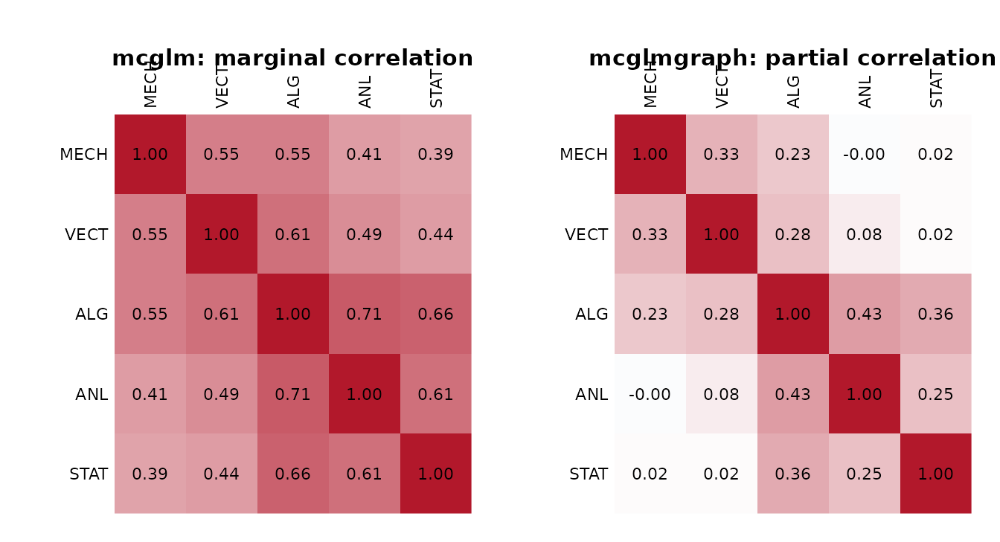
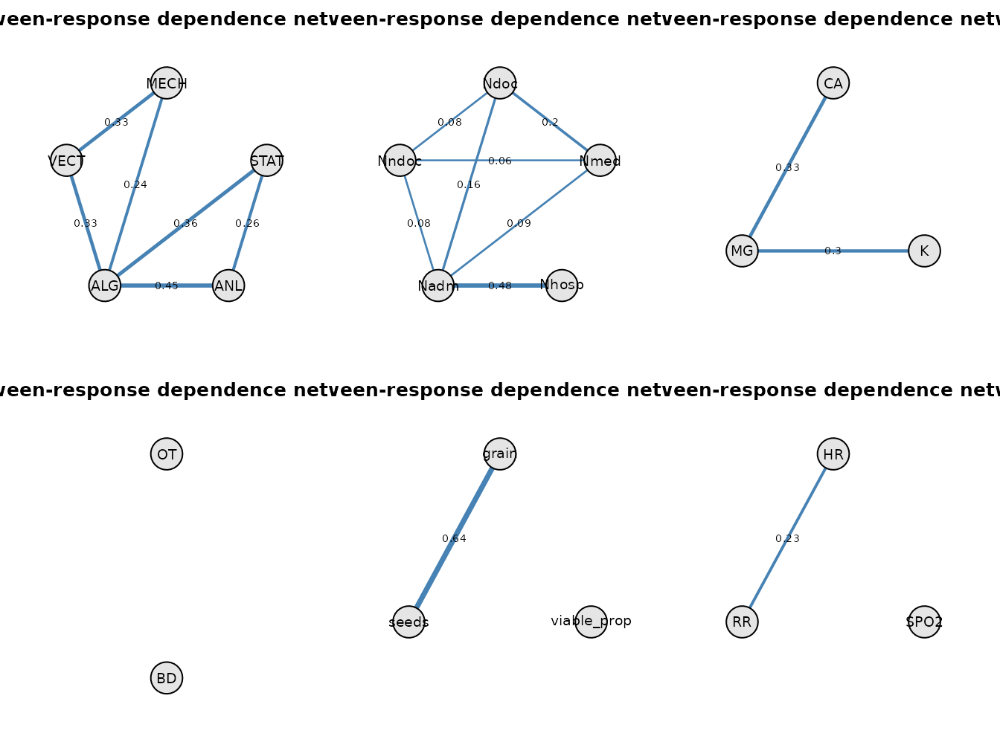

What is being compared, and what is not
This vignette runs the standard MCGLM engine and the graph-structured engine on the same six datasets and puts the two outputs next to each other. Before any number appears, it is worth being explicit about what such a comparison can and cannot show, because the two fits are not rivals estimating the same thing.
mcglm_graph() contains
mcglm(). It fits the marginal mean and dispersion blocks by
calling mcglm(), extracts the standardized Pearson
residuals, forms their between-response sample covariance, and fits the
graph layer to that second-order object. The graph layer is a second
stage on residuals; it never revisits the mean structure.
Three consequences follow, and the tables below confirm all three empirically:
- The regression coefficients are identical, not merely similar. Not “close to”, not “within tolerance”: bit-for-bit the same numbers, because they come from the same call. Any table comparing them is a check that the two-stage contract holds, not a horse race.
-
The comparison is entirely about the between-response
object. Standard MCGLM summarizes it as
R(R-1)/2unstructured correlationsrho.mcglmgraphparametrizes it as a precision matrix and reads conditional association off it. - The extra cost is the second stage only. Everything the marginal fit costs is paid by both.
So the honest question is not “which fits better”. It is: given that you have already paid for an MCGLM fit, what does the graph layer let you say that the correlation vector does not?
The comparison harness
Two small readers, then the fitting wrapper. beta_of()
deliberately calls coef() with no type, so the
mcglm_graph method falls through to the inherited one and
both objects are read the same way.
beta_of <- function(f) { cf <- coef(f); cf$Estimates[cf$Type == "beta"] }
## mcglm reports the between-response correlations as a vector in the order of
## utils::combn(R, 2); rebuild the matrix so it can sit beside mc_partial_cor().
rho_matrix <- function(rho, nm) {
R <- length(nm); idx <- t(utils::combn(R, 2L))
M <- diag(R); dimnames(M) <- list(nm, nm)
M[idx] <- rho; M[idx[, 2:1]] <- rho
M
}
## mcglm() takes the Tweedie/Poisson-Tweedie power through control_initial.
init_power <- function(lp, data, link, variance, power, Z,
Ntrial = NULL, covariance = NULL, offset = NULL) {
R <- length(lp); n <- nrow(data)
if (is.null(Ntrial)) Ntrial <- rep(list(rep(1, n)), R)
if (is.null(covariance)) covariance <- rep("identity", R)
if (is.null(offset)) offset <- rep(list(NULL), R)
ini <- suppressMessages(mc_initial_values(
linear_pred = lp, matrix_pred = Z, link = as.list(link),
variance = as.list(variance), covariance = as.list(covariance),
offset = offset, Ntrial = Ntrial, data = data))
ini$power <- lapply(power, as.numeric)
ini
}
## Fit the same specification with both engines and time each one.
fit_pair <- function(spec) {
args <- c(list(linear_pred = spec$lp, matrix_pred = spec$Z,
data = spec$data), spec$args)
t_m <- system.time(m <- suppressWarnings(suppressMessages(
do.call(mcglm::mcglm, args))))[["elapsed"]]
t_g <- system.time(g <- suppressWarnings(suppressMessages(do.call(
mcglm_graph, c(list(between_graph = mc_between_graph("ggm")), args)
))))[["elapsed"]]
list(name = spec$name, m = m, g = g, t_m = t_m, t_g = t_g)
}The pair-level reader is where the two engines actually meet. From the standard fit it takes the marginal correlation and its standard error; from the graph fit it takes the partial correlation and its delta-method standard error. Same pairs, same rows, two readings.
pair_table <- function(p) {
g <- p$g$graph; nm <- g$response_names
idx <- t(utils::combn(g$R, 2L))
smry <- summary(p$m)$Correlation
del <- mc_partial_cor_delta(p$g)
rho <- as.numeric(smry[, "Estimates"])
rho_se <- as.numeric(smry[, "Std.error"])
data.frame(
pair = paste(nm[idx[, 1]], nm[idx[, 2]], sep = "-"),
rho = rho,
rho_p = 2 * stats::pnorm(-abs(rho / rho_se)),
pcor = del$pcor,
pcor_se = del$se,
pcor_p = del$p_value,
## how much of the marginal association survives conditioning
shrink = 1 - abs(del$pcor) / pmax(abs(rho), 1e-8),
row.names = NULL, stringsAsFactors = FALSE)
}Finally, a matrix display, base graphics only, so the two covariance readings can be shown as panels next to each other.
show_matrix <- function(M, main, digits = 2) {
R <- nrow(M); lab <- rownames(M)
lim <- max(abs(M))
pal <- grDevices::colorRampPalette(c("#2166AC", "white", "#B2182B"))(64)
graphics::image(seq_len(R), seq_len(R), t(M[R:1, , drop = FALSE]),
col = pal, zlim = c(-lim, lim), axes = FALSE,
xlab = "", ylab = "", main = main, cex.main = .95)
graphics::axis(3, at = seq_len(R), labels = lab, tick = FALSE, las = 2,
cex.axis = .7, line = -.8)
graphics::axis(2, at = seq_len(R), labels = rev(lab), tick = FALSE, las = 2,
cex.axis = .7, line = -.8)
for (i in seq_len(R)) for (j in seq_len(R))
graphics::text(j, R - i + 1,
formatC(M[i, j], format = "f", digits = digits), cex = .7)
invisible(NULL)
}Six specifications
The six datasets span the response types MCGLM was built for: continuous, counts with and without an offset, a binomial proportion, and a bounded physiological signal. The model specifications are the published ones, so the numbers here are comparable to the analyses these datasets are known for.
specs <- list()marks (88 x 5, continuous). Exam scores
in five mathematics subjects, the canonical dataset of the
graphical-models literature. No covariates: the mean is an intercept per
response, so the whole model is the dependence structure. This
is the cleanest possible test of what the two readings say.
data(marks, package = "bnlearn"); marks <- as.data.frame(marks)
specs$marks <- list(
name = "marks", data = marks,
lp = lapply(names(marks), function(v) stats::reformulate("1", response = v)),
Z = rep(list(mc_id(marks)), 5),
args = list(link = rep("identity", 5), variance = rep("constant", 5),
control_algorithm = list(max_iter = 100L, tol = 1e-5,
verbose = FALSE)))ahs (5190 x 5, counts). Australian
Health Survey; five health-service counts under Poisson-Tweedie with the
power estimated.
data(ahs, package = "mcglm"); ahs <- as.data.frame(ahs)
ahs_lp <- lapply(c("Ndoc", "Nndoc", "Nadm", "Nhosp", "Nmed"), function(v)
stats::reformulate(c("sex", "age", "income"), response = v))
ahs_Z <- rep(list(mc_id(ahs)), 5)
specs$ahs <- list(
name = "ahs", data = ahs, lp = ahs_lp, Z = ahs_Z,
args = list(link = rep("log", 5), variance = rep("poisson_tweedie", 5),
power_fixed = rep(FALSE, 5),
control_initial = init_power(ahs_lp, ahs, rep("log", 5),
rep("poisson_tweedie", 5), rep(1, 5), ahs_Z),
control_algorithm = list(max_iter = 100L, tol = 1e-5,
verbose = FALSE)))soil (250 x 3, positive continuous).
Soil chemistry with a spatial trend surface in the mean and an inverse
covariance link.
data(soil, package = "mcglm"); soil <- as.data.frame(soil)
soil_lp <- lapply(c("CA", "MG", "K"), function(v) stats::reformulate(
c("COORD.X * COORD.Y", "SAND", "SILT", "CLAY", "PHWATER"), response = v))
soil_Z <- rep(list(mc_id(soil)), 3)
specs$soil <- list(
name = "soil", data = soil, lp = soil_lp, Z = soil_Z,
args = list(link = rep("log", 3), variance = rep("tweedie", 3),
power_fixed = rep(TRUE, 3), covariance = rep("inverse", 3),
control_initial = init_power(soil_lp, soil, rep("log", 3),
rep("tweedie", 3), rep(1.5, 3), soil_Z,
covariance = rep("inverse", 3)),
control_algorithm = list(max_iter = 1000L, tuning = 0.1,
verbose = FALSE, tol = 1e-3)))Hunting (1216 x 2, counts with offset).
Two prey types, hunting effort as an offset, and a hunter-month random
effect in the within-response block. With R = 2 there is
exactly one candidate edge, which makes it the boundary case.
data(Hunting, package = "mcglm"); Hunting <- as.data.frame(Hunting)
Hunting <- Hunting[order(Hunting$HUNTER, Hunting$MONTH), , drop = FALSE]
Hunting$HUNTER.MONTH <- factor(Hunting$HUNTER.MONTH)
hunt_Z <- rep(list(c(mc_id(Hunting),
mc_mixed(~ 0 + HUNTER.MONTH, data = Hunting))), 2)
hf <- OT ~ METHOD * ALT + SEX + ALT * poly(MONTH, 4)
hunt_lp <- list(hf, stats::update(hf, BD ~ .))
hunt_off <- rep(list(log(Hunting$OFFSET)), 2)
specs$Hunting <- list(
name = "Hunting", data = Hunting, lp = hunt_lp, Z = hunt_Z,
args = list(link = rep("log", 2), variance = rep("poisson_tweedie", 2),
power_fixed = rep(FALSE, 2), offset = hunt_off,
control_initial = init_power(hunt_lp, Hunting, rep("log", 2),
rep("poisson_tweedie", 2), rep(1, 2), hunt_Z,
offset = hunt_off),
control_algorithm = list(max_iter = 100L, tol = 1e-5,
verbose = FALSE)))soya (75 x 3, mixed types). A
continuous yield, a count, and a binomial proportion in the same model,
each with its own link and variance function.
data(soya, package = "mcglm"); soya <- as.data.frame(soya)
soya$viable_prop <- with(soya, viablepeas / totalpeas)
soya_lp <- list(grain ~ block + factor(water) * factor(pot),
seeds ~ block + factor(water) * factor(pot),
viable_prop ~ block + factor(water) * factor(pot))
soya_Z <- rep(list(mc_id(soya)), 3)
soya_Nt <- list(NULL, NULL, soya$totalpeas)
specs$soya <- list(
name = "soya", data = soya, lp = soya_lp, Z = soya_Z,
args = list(link = c("identity", "log", "logit"),
variance = c("constant", "tweedie", "binomialP"),
power_fixed = rep(TRUE, 3), Ntrial = soya_Nt,
control_initial = init_power(soya_lp, soya,
c("identity", "log", "logit"),
c("constant", "tweedie", "binomialP"), c(0, 1, 1),
soya_Z, Ntrial = soya_Nt),
control_algorithm = list(max_iter = 100L, tol = 1e-5,
verbose = FALSE)))NewBorn (270 x 3, physiological). Heart
rate, respiratory rate and oxygen saturation on premature newborns.
data(NewBorn, package = "mcglm"); NewBorn <- as.data.frame(NewBorn)
specs$NewBorn <- list(
name = "NewBorn", data = NewBorn,
lp = list(HR ~ Sex + GA, RR ~ Sex + GA, SPO2 ~ Sex + GA),
Z = rep(list(mc_id(NewBorn)), 3),
args = list(link = c("log", "log", "identity"),
variance = c("tweedie", "tweedie", "constant"),
power_fixed = rep(TRUE, 3),
control_algorithm = list(max_iter = 100L, tol = 1e-5,
verbose = FALSE)))Running both engines
fits <- lapply(specs, fit_pair)
sels <- lapply(fits, function(p) suppressWarnings(suppressMessages(
mc_graph_stepwise(p$g, criterion = "gbic", trace = FALSE))))
pts <- lapply(fits, pair_table)
#> Call: MECH ~ 1
#> <environment: 0x5be96a2bc6e8>
#>
#> Link function: identity
#> Variance function: constant
#> Covariance function: identity
#>
#> Regression:
#> Estimates Std.error Z value Pr(>|z|)
#> (Intercept) 38.95455 1.864038 20.89794 5.590799e-97
#>
#> Dispersion:
#> Estimates Std.error Z value Pr(>|z|)
#> 1 305.768 83.70606 3.652878 0.0002593172
#>
#> Call: VECT ~ 1
#> <environment: 0x5be96a2cafe0>
#>
#> Link function: identity
#> Variance function: constant
#> Covariance function: identity
#>
#> Regression:
#> Estimates Std.error Z value Pr(>|z|)
#> (Intercept) 50.59091 1.401469 36.09848 2.396089e-285
#>
#> Dispersion:
#> Estimates Std.error Z value Pr(>|z|)
#> 1 172.8422 60.17941 2.872116 0.004077339
#>
#> Call: ALG ~ 1
#> <environment: 0x5be96a700d70>
#>
#> Link function: identity
#> Variance function: constant
#> Covariance function: identity
#>
#> Regression:
#> Estimates Std.error Z value Pr(>|z|)
#> (Intercept) 50.60227 1.132605 44.67776 0
#>
#> Dispersion:
#> Estimates Std.error Z value Pr(>|z|)
#> 1 112.886 60.3568 1.870311 0.06144066
#>
#> Call: ANL ~ 1
#> <environment: 0x5be96a703f38>
#>
#> Link function: identity
#> Variance function: constant
#> Covariance function: identity
#>
#> Regression:
#> Estimates Std.error Z value Pr(>|z|)
#> (Intercept) 46.68182 1.582505 29.49869 2.992937e-191
#>
#> Dispersion:
#> Estimates Std.error Z value Pr(>|z|)
#> 1 220.3804 77.67579 2.837182 0.004551365
#>
#> Call: STAT ~ 1
#> <environment: 0x5be96a70afd8>
#>
#> Link function: identity
#> Variance function: constant
#> Covariance function: identity
#>
#> Regression:
#> Estimates Std.error Z value Pr(>|z|)
#> (Intercept) 42.30682 1.839452 22.99969 4.695108e-117
#>
#> Dispersion:
#> Estimates Std.error Z value Pr(>|z|)
#> 1 297.7554 98.736 3.015672 0.002564108
#>
#> Correlation:
#> Parameters Estimates Std.error Z value Pr(>|z|)
#> 1 rho12 0.5534052 0.1697977 3.259202 1.117260e-03
#> 2 rho13 0.5467511 0.2205704 2.478806 1.318231e-02
#> 3 rho14 0.4093920 0.2596890 1.576470 1.149175e-01
#> 4 rho15 0.3890993 0.2563953 1.517576 1.291214e-01
#> 5 rho23 0.6096447 0.2057834 2.962555 3.050969e-03
#> 6 rho24 0.4850813 0.2419941 2.004517 4.501468e-02
#> 7 rho25 0.4364487 0.2529081 1.725721 8.439767e-02
#> 8 rho34 0.7108058 0.1579082 4.501387 6.751151e-06
#> 9 rho35 0.6647357 0.1753142 3.791682 1.496307e-04
#> 10 rho45 0.6071743 0.1736072 3.497403 4.698113e-04
#>
#> Algorithm: chaser
#> Correction: TRUE
#> Number iterations: 5
#> Call: Ndoc ~ sex + age + income
#> <environment: 0x5be9645480b0>
#>
#> Link function: log
#> Variance function: poisson_tweedie
#> Covariance function: identity
#>
#> Regression:
#> Estimates Std.error Z value Pr(>|z|)
#> (Intercept) -1.728187 0.12843369 -13.455868 2.843807e-41
#> sexfemale 0.227515 0.07959147 2.858535 4.256015e-03
#> age 1.235649 0.18611692 6.639100 3.156041e-11
#> income -0.262696 0.11215642 -2.342229 1.916896e-02
#>
#> Power:
#> Estimates Std.error Z value Pr(>|z|)
#> 1 1.351322 2.237591 0.6039183 0.545898
#>
#> Dispersion:
#> Estimates Std.error Z value Pr(>|z|)
#> 1 1.58598 4.509265 0.3517158 0.7250514
#>
#> Call: Nndoc ~ sex + age + income
#> <environment: 0x5be9644c71b8>
#>
#> Link function: log
#> Variance function: poisson_tweedie
#> Covariance function: identity
#>
#> Regression:
#> Estimates Std.error Z value Pr(>|z|)
#> (Intercept) -2.5400132 0.2339598 -10.856622 1.854834e-27
#> sexfemale 0.4025182 0.1396155 2.883048 3.938468e-03
#> age 2.0110689 0.3227766 6.230529 4.648619e-10
#> income -0.3191037 0.1992248 -1.601727 1.092160e-01
#>
#> Power:
#> Estimates Std.error Z value Pr(>|z|)
#> 1 1.192523 1.253787 0.9511369 0.3415349
#>
#> Dispersion:
#> Estimates Std.error Z value Pr(>|z|)
#> 1 4.201141 9.222331 0.4555401 0.6487207
#>
#> Call: Nadm ~ sex + age + income
#> <environment: 0x5be963e3d598>
#>
#> Link function: log
#> Variance function: poisson_tweedie
#> Covariance function: identity
#>
#> Regression:
#> Estimates Std.error Z value Pr(>|z|)
#> (Intercept) -1.79315127 0.13549314 -13.2342584 5.564324e-40
#> sexfemale 0.03723894 0.08665208 0.4297525 6.673757e-01
#> age 0.68157230 0.20393941 3.3420333 8.316709e-04
#> income -0.49548767 0.12547770 -3.9488105 7.854048e-05
#>
#> Power:
#> Estimates Std.error Z value Pr(>|z|)
#> 1 1.363322 9.211823 0.147997 0.8823451
#>
#> Dispersion:
#> Estimates Std.error Z value Pr(>|z|)
#> 1 0.8473357 13.81626 0.06132889 0.9510973
#>
#> Call: Nhosp ~ sex + age + income
#> <environment: 0x5be963e330b0>
#>
#> Link function: log
#> Variance function: poisson_tweedie
#> Covariance function: identity
#>
#> Regression:
#> Estimates Std.error Z value Pr(>|z|)
#> (Intercept) -0.0226000 0.2129316 -0.1061374 9.154734e-01
#> sexfemale -0.2181634 0.1334946 -1.6342492 1.022065e-01
#> age 2.0292866 0.3157282 6.4273219 1.298716e-10
#> income -0.9955249 0.1977963 -5.0330825 4.826552e-07
#>
#> Power:
#> Estimates Std.error Z value Pr(>|z|)
#> 1 1.469095 0.2897587 5.070062 3.976861e-07
#>
#> Dispersion:
#> Estimates Std.error Z value Pr(>|z|)
#> 1 21.3059 5.230797 4.073166 4.637836e-05
#>
#> Call: Nmed ~ sex + age + income
#> <environment: 0x5be963e28cf8>
#>
#> Link function: log
#> Variance function: poisson_tweedie
#> Covariance function: identity
#>
#> Regression:
#> Estimates Std.error Z value Pr(>|z|)
#> (Intercept) -0.97634147 0.06171856 -15.8192522 2.291986e-56
#> sexfemale 0.49239766 0.03681850 13.3736465 8.620871e-41
#> age 1.94252474 0.08497610 22.8596604 1.171375e-115
#> income -0.02133088 0.05028469 -0.4242023 6.714183e-01
#>
#> Power:
#> Estimates Std.error Z value Pr(>|z|)
#> 1 1.415695 0.1631497 8.677273 4.053705e-18
#>
#> Dispersion:
#> Estimates Std.error Z value Pr(>|z|)
#> 1 0.5718239 0.06681894 8.557811 1.150302e-17
#>
#> Correlation:
#> Parameters Estimates Std.error Z value Pr(>|z|)
#> 1 rho12 0.12109899 0.02199767 5.505083 3.689952e-08
#> 2 rho13 0.21738835 0.03199788 6.793835 1.091909e-11
#> 3 rho14 0.10920138 0.03489712 3.129238 1.752604e-03
#> 4 rho15 0.23223263 0.02485263 9.344389 9.242184e-21
#> 5 rho23 0.12348484 0.02743873 4.500385 6.783058e-06
#> 6 rho24 0.10920310 0.03008999 3.629217 2.842827e-04
#> 7 rho25 0.10056362 0.01902881 5.284808 1.258367e-07
#> 8 rho34 0.48913360 0.09699213 5.043024 4.582323e-07
#> 9 rho35 0.15314542 0.02488881 6.153185 7.594214e-10
#> 10 rho45 0.09643055 0.02801156 3.442526 5.763080e-04
#>
#> Algorithm: chaser
#> Correction: TRUE
#> Number iterations: 10
#> Call: CA ~ COORD.X * COORD.Y + SAND + SILT + CLAY + PHWATER
#> <environment: 0x5be95fd436c8>
#>
#> Link function: log
#> Variance function: tweedie
#> Covariance function: inverse
#>
#> Regression:
#> Estimates Std.error Z value Pr(>|z|)
#> (Intercept) 4.720271e-02 0.4335139167 0.108884 9.132945e-01
#> COORD.X -4.773947e-03 0.0007589175 -6.290468 3.165101e-10
#> COORD.Y -7.691246e-04 0.0002428930 -3.166516 1.542767e-03
#> SAND -1.758829e-02 0.0093633075 -1.878427 6.032284e-02
#> SILT -7.922818e-03 0.0057826706 -1.370097 1.706567e-01
#> CLAY -1.539145e-02 0.0044181290 -3.483703 4.945278e-04
#> PHWATER 3.897323e-01 0.0265205886 14.695464 6.892509e-49
#> COORD.X:COORD.Y 3.766334e-05 0.0000114596 3.286620 1.013976e-03
#>
#> Dispersion:
#> Estimates Std.error Z value Pr(>|z|)
#> 1 110.2486 9.799902 11.24997 2.316833e-29
#>
#> Call: MG ~ COORD.X * COORD.Y + SAND + SILT + CLAY + PHWATER
#> <environment: 0x5be95fd0be18>
#>
#> Link function: log
#> Variance function: tweedie
#> Covariance function: inverse
#>
#> Regression:
#> Estimates Std.error Z value Pr(>|z|)
#> (Intercept) -1.515738e+00 0.4558538689 -3.32505175 8.840213e-04
#> COORD.X 3.288857e-04 0.0007963953 0.41296794 6.796301e-01
#> COORD.Y 1.177216e-03 0.0002548238 4.61972317 3.842524e-06
#> SAND -2.477757e-04 0.0098454865 -0.02516643 9.799222e-01
#> SILT -1.083557e-02 0.0060930154 -1.77835914 7.534489e-02
#> CLAY -4.553889e-03 0.0046442415 -0.98054523 3.268171e-01
#> PHWATER 3.038208e-01 0.0278082220 10.92557363 8.698900e-28
#> COORD.X:COORD.Y -5.873893e-05 0.0000120631 -4.86930777 1.119899e-06
#>
#> Dispersion:
#> Estimates Std.error Z value Pr(>|z|)
#> 1 203.0116 19.08757 10.6358 2.030805e-26
#>
#> Call: K ~ COORD.X * COORD.Y + SAND + SILT + CLAY + PHWATER
#> <environment: 0x5be95f6f3cd8>
#>
#> Link function: log
#> Variance function: tweedie
#> Covariance function: inverse
#>
#> Regression:
#> Estimates Std.error Z value Pr(>|z|)
#> (Intercept) -3.354138e+00 1.092735e+00 -3.069489809 2.144247e-03
#> COORD.X -4.118237e-03 1.931183e-03 -2.132493781 3.296628e-02
#> COORD.Y 1.520769e-04 6.142125e-04 0.247596544 8.044466e-01
#> SAND -1.547689e-04 2.359798e-02 -0.006558567 9.947671e-01
#> SILT -1.134093e-02 1.454011e-02 -0.779975766 4.354051e-01
#> CLAY -3.057343e-02 1.110871e-02 -2.752204072 5.919562e-03
#> PHWATER 7.267730e-01 6.688395e-02 10.866178956 1.670514e-27
#> COORD.X:COORD.Y 5.983106e-05 2.873334e-05 2.082287274 3.731624e-02
#>
#> Dispersion:
#> Estimates Std.error Z value Pr(>|z|)
#> 1 45.69855 6.614154 6.909205 4.873789e-12
#>
#> Correlation:
#> Parameters Estimates Std.error Z value Pr(>|z|)
#> 1 rho12 0.3422381 0.06521491 5.247851 1.538841e-07
#> 2 rho13 0.2129853 0.07513964 2.834527 4.589364e-03
#> 3 rho23 0.3178120 0.07439214 4.272119 1.936244e-05
#>
#> Algorithm: chaser
#> Correction: TRUE
#> Number iterations: 92
#> Call: OT ~ METHOD * ALT + SEX + ALT * poly(MONTH, 4)
#>
#> Link function: log
#> Variance function: poisson_tweedie
#> Covariance function: identity
#>
#> Regression:
#> Estimates Std.error Z value Pr(>|z|)
#> (Intercept) 0.1114436 0.1393188 0.7999175 4.237586e-01
#> METHODTrampa 0.1975359 0.1911528 1.0333928 3.014201e-01
#> ALT2 -1.1995320 0.2306749 -5.2000972 1.991843e-07
#> ALT3 -2.2760649 0.2140205 -10.6348000 2.052686e-26
#> ALT4 -1.8087428 0.2024542 -8.9340834 4.105675e-19
#> ALT5 -0.7191452 0.2102224 -3.4208790 6.241910e-04
#> SEXMale -0.6200356 0.0790683 -7.8417716 4.442337e-15
#> poly(MONTH, 4)1 -4.4349142 4.2214756 -1.0505602 2.934606e-01
#> poly(MONTH, 4)2 0.5630925 4.0683270 0.1384089 8.899173e-01
#> poly(MONTH, 4)3 3.8658870 3.8877322 0.9943810 3.200374e-01
#> poly(MONTH, 4)4 -7.0729203 3.8686411 -1.8282700 6.750905e-02
#> METHODTrampa:ALT2 0.4975777 0.2901590 1.7148448 8.637369e-02
#> METHODTrampa:ALT3 0.5108821 0.2846245 1.7949340 7.266421e-02
#> METHODTrampa:ALT4 -0.1060115 0.3165243 -0.3349237 7.376826e-01
#> METHODTrampa:ALT5 -0.8752377 0.2707771 -3.2323181 1.227903e-03
#> ALT2:poly(MONTH, 4)1 12.2169334 6.0832854 2.0082788 4.461367e-02
#> ALT3:poly(MONTH, 4)1 -5.8799733 6.6830203 -0.8798377 3.789472e-01
#> ALT4:poly(MONTH, 4)1 19.1652888 6.1981643 3.0920911 1.987518e-03
#> ALT5:poly(MONTH, 4)1 7.3909632 5.9790376 1.2361460 2.164043e-01
#> ALT2:poly(MONTH, 4)2 -21.7201062 5.8333020 -3.7234668 1.965057e-04
#> ALT3:poly(MONTH, 4)2 8.0169948 6.2182464 1.2892694 1.973044e-01
#> ALT4:poly(MONTH, 4)2 -3.4040820 6.1541247 -0.5531383 5.801687e-01
#> ALT5:poly(MONTH, 4)2 -10.0127661 5.8584478 -1.7091159 8.742949e-02
#> ALT2:poly(MONTH, 4)3 -10.4743849 5.8713403 -1.7839853 7.442605e-02
#> ALT3:poly(MONTH, 4)3 16.0567642 6.5090750 2.4668273 1.363161e-02
#> ALT4:poly(MONTH, 4)3 10.2031474 6.3110711 1.6167061 1.059417e-01
#> ALT5:poly(MONTH, 4)3 -15.1141039 5.7059550 -2.6488299 8.077098e-03
#> ALT2:poly(MONTH, 4)4 2.3525795 6.2172294 0.3783968 7.051359e-01
#> ALT3:poly(MONTH, 4)4 5.9821621 6.9202196 0.8644469 3.873425e-01
#> ALT4:poly(MONTH, 4)4 5.0487107 6.3236335 0.7983876 4.246456e-01
#> ALT5:poly(MONTH, 4)4 12.2379421 5.9089767 2.0710764 3.835166e-02
#>
#> Power:
#> Estimates Std.error Z value Pr(>|z|)
#> 1 1.710831 0.2223497 7.694323 1.422448e-14
#>
#> Dispersion:
#> Estimates Std.error Z value Pr(>|z|)
#> 1 0.3002199 0.1386053 2.166005 3.031079e-02
#> 2 0.6083746 0.1429471 4.255941 2.081712e-05
#>
#> Call: BD ~ METHOD + ALT + SEX + poly(MONTH, 4) + METHOD:ALT + ALT:poly(MONTH,
#> 4)
#>
#> Link function: log
#> Variance function: poisson_tweedie
#> Covariance function: identity
#>
#> Regression:
#> Estimates Std.error Z value Pr(>|z|)
#> (Intercept) 0.49233975 0.09944921 4.950665409 7.396017e-07
#> METHODTrampa -0.27639074 0.13844200 -1.996437082 4.588637e-02
#> ALT2 -0.13361273 0.13024764 -1.025836137 3.049688e-01
#> ALT3 0.30603347 0.10395982 2.943766936 3.242441e-03
#> ALT4 0.76437898 0.10585980 7.220673040 5.173090e-13
#> ALT5 0.04460446 0.12947297 0.344507899 7.304644e-01
#> SEXMale -0.59029072 0.02997222 -19.694593615 2.399144e-86
#> poly(MONTH, 4)1 -0.07342201 3.89199335 -0.018864887 9.849489e-01
#> poly(MONTH, 4)2 -12.46392246 3.78210387 -3.295499780 9.824678e-04
#> poly(MONTH, 4)3 -10.48003132 3.19286262 -3.282330799 1.029528e-03
#> poly(MONTH, 4)4 2.33329020 2.98802688 0.780879923 4.348731e-01
#> METHODTrampa:ALT2 0.45390375 0.17158579 2.645345786 8.160748e-03
#> METHODTrampa:ALT3 0.42104281 0.14948270 2.816665797 4.852499e-03
#> METHODTrampa:ALT4 0.51439225 0.15636797 3.289626682 1.003204e-03
#> METHODTrampa:ALT5 1.07686186 0.16104714 6.686625044 2.283760e-11
#> ALT2:poly(MONTH, 4)1 -17.50600580 4.59680599 -3.808297723 1.399267e-04
#> ALT3:poly(MONTH, 4)1 1.56463504 4.13236309 0.378629613 7.049629e-01
#> ALT4:poly(MONTH, 4)1 -5.96535193 4.05357858 -1.471626077 1.411219e-01
#> ALT5:poly(MONTH, 4)1 -3.83340749 4.23730096 -0.904681431 3.656342e-01
#> ALT2:poly(MONTH, 4)2 0.02323274 4.53184043 0.005126557 9.959096e-01
#> ALT3:poly(MONTH, 4)2 2.10837333 4.12657732 0.510925439 6.094033e-01
#> ALT4:poly(MONTH, 4)2 3.48612305 3.98824348 0.874099854 3.820639e-01
#> ALT5:poly(MONTH, 4)2 5.25501210 4.18271971 1.256362477 2.089846e-01
#> ALT2:poly(MONTH, 4)3 8.41209409 4.05557905 2.074202967 3.806046e-02
#> ALT3:poly(MONTH, 4)3 15.24512199 3.49109771 4.366856295 1.260476e-05
#> ALT4:poly(MONTH, 4)3 13.51309960 3.48896402 3.873098014 1.074606e-04
#> ALT5:poly(MONTH, 4)3 11.14550777 3.59945124 3.096446380 1.958553e-03
#> ALT2:poly(MONTH, 4)4 -4.22443659 3.88596219 -1.087101826 2.769918e-01
#> ALT3:poly(MONTH, 4)4 -9.13374367 3.38153616 -2.701063432 6.911815e-03
#> ALT4:poly(MONTH, 4)4 -3.97520738 3.35808349 -1.183772644 2.365031e-01
#> ALT5:poly(MONTH, 4)4 -3.78896098 3.52413738 -1.075145653 2.823095e-01
#>
#> Power:
#> Estimates Std.error Z value Pr(>|z|)
#> 1 1.473935 0.3389676 4.348307 1.371928e-05
#>
#> Dispersion:
#> Estimates Std.error Z value Pr(>|z|)
#> 1 0.1287377 0.1011289 1.273007 0.20301573
#> 2 0.4860474 0.2766760 1.756738 0.07896242
#>
#> Correlation:
#> Parameters Estimates Std.error Z value Pr(>|z|)
#> 1 rho12 -0.06703167 0.02951288 -2.271269 0.02313073
#>
#> Algorithm: chaser
#> Correction: TRUE
#> Number iterations: 50
#> Call: grain ~ block + factor(water) * factor(pot)
#>
#> Link function: identity
#> Variance function: constant
#> Covariance function: identity
#>
#> Regression:
#> Estimates Std.error Z value Pr(>|z|)
#> (Intercept) 14.2454435 1.408468 10.11414185 4.781891e-24
#> blockII 1.1323087 1.018419 1.11183025 2.662111e-01
#> blockIII -0.7794528 1.018455 -0.76532870 4.440758e-01
#> blockIV -1.5492854 1.018422 -1.52126135 1.281943e-01
#> blockV -2.3865079 1.018415 -2.34335602 1.911114e-02
#> factor(water)50 2.1660181 1.770932 1.22309526 2.212937e-01
#> factor(water)62.5 2.5404970 1.770931 1.43455467 1.514140e-01
#> factor(pot)30 6.7893235 1.770921 3.83378064 1.261887e-04
#> factor(pot)60 10.3980252 1.770910 5.87157254 4.316806e-09
#> factor(pot)120 11.7895572 1.770917 6.65731673 2.788718e-11
#> factor(pot)180 11.8634336 1.770898 6.69910699 2.096970e-11
#> factor(water)50:factor(pot)30 0.1068145 2.504471 0.04264951 9.659809e-01
#> factor(water)62.5:factor(pot)30 -1.8676731 2.504477 -0.74573381 4.558282e-01
#> factor(water)50:factor(pot)60 2.6031567 2.504466 1.03940606 2.986159e-01
#> factor(water)62.5:factor(pot)60 3.3581963 2.504464 1.34088404 1.799581e-01
#> factor(water)50:factor(pot)120 2.2543843 2.504473 0.90014313 3.680441e-01
#> factor(water)62.5:factor(pot)120 5.5830318 2.504449 2.22924559 2.579757e-02
#> factor(water)50:factor(pot)180 1.2095021 2.504459 0.48293952 6.291387e-01
#> factor(water)62.5:factor(pot)180 9.2387629 2.504456 3.68892931 2.251998e-04
#>
#> Dispersion:
#> Estimates Std.error Z value Pr(>|z|)
#> 1 7.844041 2.244658 3.494537 0.0004748847
#>
#> Call: seeds ~ block + factor(water) * factor(pot)
#>
#> Link function: log
#> Variance function: tweedie
#> Covariance function: identity
#>
#> Regression:
#> Estimates Std.error Z value Pr(>|z|)
#> (Intercept) 4.80743939 0.07606991 63.1976457 0.0000000000
#> blockII -0.01824106 0.04499209 -0.4054282 0.6851628179
#> blockIII -0.03297048 0.04516283 -0.7300356 0.4653684018
#> blockIV -0.10656664 0.04602825 -2.3152444 0.0205995582
#> blockV -0.12613174 0.04626660 -2.7261940 0.0064069321
#> factor(water)50 0.13216772 0.09679652 1.3654181 0.1721216725
#> factor(water)62.5 0.18638702 0.09559607 1.9497351 0.0512076995
#> factor(pot)30 0.29798297 0.09327816 3.1945631 0.0014004265
#> factor(pot)60 0.34438029 0.09237216 3.7281828 0.0001928654
#> factor(pot)120 0.36718061 0.09193978 3.9937079 0.0000650480
#> factor(pot)180 0.29447224 0.09334644 3.1546168 0.0016070905
#> factor(water)50:factor(pot)30 0.04249536 0.12723806 0.3339831 0.7383923220
#> factor(water)62.5:factor(pot)30 -0.13723681 0.12796475 -1.0724580 0.2835143844
#> factor(water)50:factor(pot)60 0.11611009 0.12517712 0.9275664 0.3536325271
#> factor(water)62.5:factor(pot)60 0.09016163 0.12394104 0.7274558 0.4669467868
#> factor(water)50:factor(pot)120 0.11590026 0.12461128 0.9300944 0.3523221928
#> factor(water)62.5:factor(pot)120 0.06977368 0.12359191 0.5645489 0.5723806312
#> factor(water)50:factor(pot)180 0.29054249 0.12460741 2.3316630 0.0197184282
#> factor(water)62.5:factor(pot)180 0.21655814 0.12387371 1.7482170 0.0804264516
#>
#> Dispersion:
#> Estimates Std.error Z value Pr(>|z|)
#> 1 2.89296 0.4729358 6.117025 9.533855e-10
#>
#> Call: viable_prop ~ block + factor(water) * factor(pot)
#>
#> Link function: logit
#> Variance function: binomialP
#> Covariance function: identity
#>
#> Regression:
#> Estimates Std.error Z value Pr(>|z|)
#> (Intercept) -0.83602281 0.2280847 -3.66540497 2.469475e-04
#> blockII -0.43826434 0.2177656 -2.01255074 4.416191e-02
#> blockIII -0.16706608 0.2116413 -0.78938329 4.298880e-01
#> blockIV -0.18748394 0.2123283 -0.88299076 3.772413e-01
#> blockV -0.29230868 0.2164919 -1.35020609 1.769499e-01
#> factor(water)50 0.56750503 0.2522648 2.24963979 2.447182e-02
#> factor(water)62.5 0.24140482 0.2535912 0.95194494 3.411249e-01
#> factor(pot)30 -1.84551346 0.3813036 -4.84001032 1.298324e-06
#> factor(pot)60 -3.15174290 0.6260658 -5.03420415 4.798381e-07
#> factor(pot)120 -3.39156897 0.6907614 -4.90989950 9.112308e-07
#> factor(pot)180 -3.63070048 0.7927407 -4.57993433 4.651219e-06
#> factor(water)50:factor(pot)30 -0.27721257 0.4914438 -0.56407781 5.727012e-01
#> factor(water)62.5:factor(pot)30 0.80455991 0.4624513 1.73977211 8.189904e-02
#> factor(water)50:factor(pot)60 0.45972536 0.7203740 0.63817594 5.233592e-01
#> factor(water)62.5:factor(pot)60 0.63107344 0.7290990 0.86555246 3.867356e-01
#> factor(water)50:factor(pot)120 0.68812770 0.7774631 0.88509368 3.761061e-01
#> factor(water)62.5:factor(pot)120 -0.83511935 1.0531045 -0.79300711 4.277737e-01
#> factor(water)50:factor(pot)180 1.27285290 0.8503248 1.49690203 1.344188e-01
#> factor(water)62.5:factor(pot)180 0.06806435 0.9739675 0.06988359 9.442863e-01
#>
#> Dispersion:
#> Estimates Std.error Z value Pr(>|z|)
#> 1 1.736378 0.2068251 8.39539 4.643498e-17
#>
#> Correlation:
#> Parameters Estimates Std.error Z value Pr(>|z|)
#> 1 rho12 0.63667673 0.1019482 6.2450987 4.235326e-10
#> 2 rho13 0.06831598 0.1766365 0.3867602 6.989337e-01
#> 3 rho23 0.08609107 0.1756610 0.4900977 6.240648e-01
#>
#> Algorithm: chaser
#> Correction: TRUE
#> Number iterations: 11
#> Call: HR ~ Sex + GA
#>
#> Link function: log
#> Variance function: tweedie
#> Covariance function: identity
#>
#> Regression:
#> Estimates Std.error Z value Pr(>|z|)
#> (Intercept) 5.093978135 0.041233271 123.540482 0.000000000
#> SexMale 0.043000389 0.013210034 3.255131 0.001133402
#> GA -0.003452972 0.001358903 -2.541000 0.011053577
#>
#> Dispersion:
#> Estimates Std.error Z value Pr(>|z|)
#> 1 1.305439 0.1095497 11.9164 9.721476e-33
#>
#> Call: RR ~ Sex + GA
#>
#> Link function: log
#> Variance function: tweedie
#> Covariance function: identity
#>
#> Regression:
#> Estimates Std.error Z value Pr(>|z|)
#> (Intercept) 3.63741480 0.110363073 32.958622 3.183260e-238
#> SexMale -0.11367073 0.034955315 -3.251887 1.146416e-03
#> GA 0.01125249 0.003624604 3.104475 1.906173e-03
#>
#> Dispersion:
#> Estimates Std.error Z value Pr(>|z|)
#> 1 3.102754 0.2500049 12.41078 2.284257e-35
#>
#> Call: SPO2 ~ Sex + GA
#>
#> Link function: identity
#> Variance function: constant
#> Covariance function: identity
#>
#> Regression:
#> Estimates Std.error Z value Pr(>|z|)
#> (Intercept) 0.9507037103 0.0113668312 83.6384118 0.0000000
#> SexMale 0.0055399751 0.0036291449 1.5265235 0.1268795
#> GA 0.0001545008 0.0003743587 0.4127078 0.6798207
#>
#> Dispersion:
#> Estimates Std.error Z value Pr(>|z|)
#> 1 0.0006580396 4.934845e-05 13.33455 1.457231e-40
#>
#> Correlation:
#> Parameters Estimates Std.error Z value Pr(>|z|)
#> 1 rho12 0.22935574 0.05984309 3.832619 0.0001267864
#> 2 rho13 -0.04342121 0.06424710 -0.675847 0.4991377839
#> 3 rho23 -0.06575132 0.06400456 -1.027291 0.3042833560
#>
#> Algorithm: chaser
#> Correction: TRUE
#> Number iterations: 5The master table
master <- do.call(rbind, Map(function(p, sel, pt) {
R <- p$g$graph$R
data.frame(
dataset = p$name,
n = p$g$graph$n,
R = R,
beta_gap = max(abs(beta_of(p$m) - beta_of(p$g))),
rho_free = choose(R, 2),
edges = sel$n_edges,
dropped = sprintf("%.0f%%", 100 * (1 - sel$n_edges / choose(R, 2))),
flips = sum(pt$rho_p < .05 & pt$pcor_p >= .05),
wald_p = unname(mc_test_independence(p$g, robust = TRUE)$p.value),
sec_mcglm = round(p$t_m, 2),
sec_graph = round(p$t_g, 2),
row.names = NULL, stringsAsFactors = FALSE)
}, fits, sels, pts))
knitr::kable(master, digits = c(0, 0, 0, 10, 0, 0, 0, 0, 3, 2, 2))| dataset | n | R | beta_gap | rho_free | edges | dropped | flips | wald_p | sec_mcglm | sec_graph | |
|---|---|---|---|---|---|---|---|---|---|---|---|
| marks | marks | 88 | 5 | 0 | 10 | 6 | 40% | 1 | 0.000 | 0.29 | 0.24 |
| ahs | ahs | 5190 | 5 | 0 | 10 | 7 | 30% | 2 | 0.000 | 6.80 | 6.20 |
| soil | soil | 250 | 3 | 0 | 3 | 2 | 33% | 1 | 0.000 | 3.02 | 2.91 |
| Hunting | Hunting | 1216 | 2 | 0 | 1 | 0 | 100% | 1 | 0.079 | 4.13 | 4.11 |
| soya | soya | 75 | 3 | 0 | 3 | 1 | 67% | 0 | 0.004 | 0.51 | 0.35 |
| NewBorn | NewBorn | 270 | 3 | 0 | 3 | 1 | 67% | 0 | 0.001 | 0.14 | 0.14 |
Read the columns in three groups.
beta_gap is exactly zero on every
dataset. This is the two-stage contract, visible: the largest
absolute discrepancy between the regression coefficients of the two
fits, across all six models and every coefficient in them, is zero. The
graph layer buys its structure without touching a single mean parameter.
If you were hoping the graph layer would sharpen the regression
estimates, this column is the answer: it does not, and it is not meant
to.
rho_free versus edges. The
standard fit always carries R(R-1)/2 correlation
parameters; it has no mechanism to decide that one of them is
unnecessary. The graph layer, selected by GBIC, keeps between 0 and 7 of
them. Hunting is the extreme: the single available
correlation is dropped altogether.
sec_mcglm versus
sec_graph. The graph timing includes the
marginal fit, because mcglm_graph() performs it internally,
so the two columns are not additive: the second is the first plus the
second stage. They come out indistinguishable, and on some runs
sec_graph is even the smaller of the two. That is not the
graph layer running faster than nothing; it is the second stage costing
less than the run-to-run variation of the marginal fit it sits on top
of, at every sample size here including n = 5190. The graph
layer is not where the computation goes.
Where the two readings disagree
The flips column counts the pairs that a standard
analysis would call significantly correlated and that the conditional
reading does not (rho significant at 5%, partial
correlation not). These are exactly the conclusions that change
depending on which engine you ran.
flips <- do.call(rbind, Map(function(pt, nm) {
f <- pt[pt$rho_p < .05 & pt$pcor_p >= .05, , drop = FALSE]
if (!nrow(f)) NULL else cbind(dataset = nm, f)
}, pts, names(pts)))
knitr::kable(flips, digits = 3, row.names = FALSE)| dataset | pair | rho | rho_p | pcor | pcor_se | pcor_p | shrink |
|---|---|---|---|---|---|---|---|
| marks | VECT-ANL | 0.485 | 0.045 | 0.078 | 0.106 | 0.461 | 0.839 |
| ahs | Ndoc-Nhosp | 0.109 | 0.002 | -0.006 | 0.014 | 0.648 | 0.942 |
| ahs | Nhosp-Nmed | 0.096 | 0.001 | 0.021 | 0.014 | 0.126 | 0.780 |
| soil | CA-K | 0.213 | 0.005 | 0.117 | 0.062 | 0.061 | 0.451 |
| Hunting | OT-BD | -0.067 | 0.023 | -0.047 | 0.029 | 0.101 | 0.301 |
Each row is a pair of responses that look associated until the other
responses are held fixed. VECT-ANL in marks is
the textbook case: a marginal correlation of 0.49, significant at 5%,
that falls to 0.08 and loses all significance once algebra is
conditioned on. Ndoc-Nhosp in ahs behaves the
same way with 5190 observations, so this is not a small-sample artifact.
And in Hunting the single correlation between the two prey
counts is significant marginally and not conditionally, which is why
GBIC keeps no edge at all.
The table is deliberately conservative: it counts only pairs that
cross the significance threshold in one reading and not in the other.
MECH-ANL in marks does not appear in it,
because with n = 88 its marginal correlation of 0.41
already fails to reach 5% on its own (rho_p close to
0.115), and yet its partial correlation is -0.002, the
largest collapse in this comparison. “Not enough evidence of a marginal
association” and “no conditional association” are different claims, and
only the second engine is in a position to make the second one.
The shrink column generalizes this beyond the
significance threshold: it is the fraction of the marginal association
that does not survive conditioning.
shr <- do.call(rbind, Map(function(pt, nm) data.frame(
dataset = nm,
pairs = nrow(pt),
median_shrink = sprintf("%.0f%%", 100 * stats::median(pt$shrink)),
max_shrink = sprintf("%.0f%%", 100 * max(pt$shrink)),
marg_signif = sum(pt$rho_p < .05),
cond_signif = sum(pt$pcor_p < .05),
row.names = NULL), pts, names(pts)))
knitr::kable(shr, row.names = FALSE)| dataset | pairs | median_shrink | max_shrink | marg_signif | cond_signif |
|---|---|---|---|---|---|
| marks | 10 | 58% | 100% | 7 | 6 |
| ahs | 10 | 42% | 94% | 10 | 8 |
| soil | 3 | 16% | 45% | 3 | 2 |
| Hunting | 1 | 30% | 30% | 1 | 0 |
| soya | 3 | 34% | 74% | 1 | 1 |
| NewBorn | 3 | 13% | 33% | 1 | 1 |
The two matrices, side by side
marks shows the contrast most sharply, so it gets the
full treatment: the marginal correlation matrix that the standard fit
reports, and the partial correlation matrix the graph layer reads off
the precision.
p <- fits$marks; nm <- p$g$graph$response_names
Rmarg <- rho_matrix(pts$marks$rho, nm)
Rpart <- mc_partial_cor(p$g)
op <- par(mfrow = c(1, 2), mar = c(1, 4, 4, 1))
show_matrix(Rmarg, "mcglm: marginal correlation")
show_matrix(Rpart, "mcglmgraph: partial correlation")
par(op)The left panel is uniformly warm: every one of the ten pairs
correlates between 0.39 and 0.71, which is the honest summary of what
the standard fit found. The right panel is where the structure appears.
The MECH-VECT-ALG block and the
ALG-ANL-STAT block survive; the
four cells linking {MECH, VECT} to {ANL, STAT}
collapse to roughly zero. Algebra separates the two groups.
The same fit, three matrices, in the order the package computes them:
round(p$g$graph$Sigma_b, 3) # residual between-response covariance
#> MECH VECT ALG ANL STAT
#> MECH 0.989 0.547 0.541 0.405 0.385
#> VECT 0.547 0.989 0.603 0.480 0.431
#> ALG 0.541 0.603 0.989 0.703 0.657
#> ANL 0.405 0.480 0.703 0.989 0.600
#> STAT 0.385 0.431 0.657 0.600 0.989
round(p$g$graph$K_b, 3) # precision: the parametrized object
#> MECH VECT ALG ANL STAT
#> MECH 1.622 -0.566 -0.515 0.003 -0.044
#> VECT -0.566 1.823 -0.665 -0.157 -0.038
#> ALG -0.515 -0.665 3.078 -1.125 -0.873
#> ANL 0.003 -0.157 -1.125 2.203 -0.523
#> STAT -0.044 -0.038 -0.873 -0.523 1.943
round(Rpart, 3) # partial correlations read off K_b
#> MECH VECT ALG ANL STAT
#> MECH 1.000 0.329 0.230 -0.002 0.025
#> VECT 0.329 1.000 0.281 0.078 0.020
#> ALG 0.230 0.281 1.000 0.432 0.357
#> ANL -0.002 0.078 0.432 1.000 0.253
#> STAT 0.025 0.020 0.357 0.253 1.000K_b is the object the GGM layer actually parametrizes,
as a linear combination of canonical bases. Its off-diagonal entries
carry the conditional structure directly, and they line up exactly with
the selection: the four smallest in magnitude are MECH-ANL
(0.003), VECT-STAT (-0.038), MECH-STAT
(-0.044) and VECT-ANL (-0.157), and those four are
precisely the four edges GBIC drops. The covariance Sigma_b
shows none of this. Its entries for the same four pairs run from 0.385
to 0.480 against 0.541 to 0.703 for the six that are kept: the dropped
pairs are the smaller ones, but nothing there is remotely near zero, and
no threshold on Sigma_b separates the two groups the way
the inverse does. The difference is categorical only in
K_b, which is why that is the object the layer
parametrizes.
Selected structures
supp <- do.call(rbind, Map(function(p, sel) {
rn <- p$g$graph$response_names; e <- sel$edges
data.frame(
dataset = p$name,
support = if (is.null(e) || !nrow(e)) "(empty)" else
paste(apply(e, 1, function(r) paste(rn[r[1]], rn[r[2]], sep = "-")),
collapse = ", "),
row.names = NULL, stringsAsFactors = FALSE)
}, fits, sels))
knitr::kable(supp, row.names = FALSE)| dataset | support |
|---|---|
| marks | MECH-VECT, MECH-ALG, VECT-ALG, ALG-ANL, ALG-STAT, ANL-STAT |
| ahs | Ndoc-Nndoc, Ndoc-Nadm, Ndoc-Nmed, Nndoc-Nadm, Nndoc-Nmed, Nadm-Nhosp, Nadm-Nmed |
| soil | CA-MG, MG-K |
| Hunting | (empty) |
| soya | grain-seeds |
| NewBorn | HR-RR |
Three of these are readable as substantive claims rather than
parameter counts. marks recovers the butterfly with algebra
at the center. soil returns the chain
CA - MG - K: magnesium separates calcium from potassium,
and the direct CA-K link is not needed once it is held
fixed. NewBorn keeps HR-RR, the
cardio-respiratory coupling, and drops both links to oxygen
saturation.
op <- par(mfrow = c(2, 3))
for (nm in names(sels)) mc_plot_network(sels[[nm]]$fit, edge_labels = TRUE)
par(op)Parsimony, and whether it is paid for
Dropping edges is only a gain if the criterion agrees. GBIC on the saturated graph against GBIC on the selected one:
crit <- do.call(rbind, Map(function(p, s) {
sat <- unname(mc_compute_criterion(p$g, "gbic"))
sel <- unname(mc_compute_criterion(s$fit, "gbic"))
data.frame(dataset = p$name, npar_sat = p$g$graph$npar,
npar_sel = s$fit$graph$npar, gbic_sat = sat, gbic_sel = sel,
delta = sel - sat, row.names = NULL)
}, fits, sels))
knitr::kable(crit, digits = 2, row.names = FALSE)| dataset | npar_sat | npar_sel | gbic_sat | gbic_sel | delta |
|---|---|---|---|---|---|
| marks | 15 | 11 | 1108.51 | 1092.80 | -15.71 |
| ahs | 15 | 12 | 73072.50 | 73017.19 | -55.31 |
| soil | 6 | 5 | 2082.43 | 2079.43 | -3.01 |
| Hunting | 3 | 2 | 7002.40 | 6998.93 | -3.47 |
| soya | 6 | 4 | 568.90 | 563.11 | -5.79 |
| NewBorn | 6 | 4 | 2304.19 | 2294.77 | -9.42 |
delta is negative on all six: every selected structure
improves GBIC over the saturated one. The parsimony is not imposed, it
is preferred.
What the graph layer does not give you
The columns above are the gains. The limits are as follows, and they are not small print.
-
No improvement in the mean model.
beta_gap = 0is not a rounding statement. The regression estimates, their standard errors and every inherited method (vcov,gof,pAIC,pBIC,plogLik) refer to the first-stage fit and are untouched. -
The uncertainty is conditional on the estimated
residuals. The delta-method standard errors in
pcor_setreat the first-stage fit as given.mc_partial_cor_delta(variability = "two_stage")propagates its uncertainty, and so doesmc_vcov_graph(type = "two_stage")for the graph parameters. For the partial correlations, the empirical and the two-stage variances agree to first order when the mean is correctly specified, the conditional covariance of the Pearson residuals does not change with the covariates and the support contains the true one. With count responses the residual correlation can vary with the mean, the agreement is then only approximate, and the two-stage form is the one to report. -
A selected support is not a tested support.
mc_graph_stepwise()searches, and the p-values reported afterwards on the selected graph are descriptive. Nothing here delivers post-selection inference. - “Conditional association” is second-order. A missing edge means absence of second-order conditional association. It coincides with full conditional independence under joint normality, or on the latent scale of a Gaussian copula, not in general.
- The graph is on residuals. Edges describe residual conditional association among responses after the marginal means are removed, which is a different object from raw marginal association among the responses themselves.
Summary
Across six datasets, four variance functions and sample sizes from 75 to 5190, the comparison is consistent. The two engines return identical mean models, at a second-stage cost measured in fractions of a second. What the graph layer adds is a different reading of the same residual second-order object: partial instead of marginal correlations, with standard errors and tests attached, a selectable support that GBIC prefers to the saturated one on every dataset, and in four of the six cases at least one pair whose apparent association does not survive conditioning.
Whether that reading is the one you want is a modeling question. If
the between-response correlations are nuisance, the standard fit already
gives you everything. If they are the object of interest, the marginal
correlation vector is the wrong summary, and the rows of the
flips table above are what it costs to use it anyway.
References
Bonat, W. H. and Jorgensen, B. (2016). Multivariate covariance generalized linear models. Journal of the Royal Statistical Society: Series C, 65(5), 649–675. doi:10.1111/rssc.12145
Bonat, W. H. (2018). Multiple response variables regression models in R: the mcglm package. Journal of Statistical Software, 84(4), 1–30. doi:10.18637/jss.v084.i04